Trabajos realizados
Cada práctica es un paso más hacia el proyecto final del curso. Toca el título para desplegar el detalle.
En desarrollo
Práctica 1 — Diseño de PCB en KiCad
›
Práctica 1 — Diseño de PCB en KiCad
En esta práctica documentamos el flujo completo que seguimos en KiCad: configuramos las librerías, construimos el esquemático, verificamos las huellas, pasamos el circuito al editor de PCB, definimos las reglas necesarias para fabricación y finalmente exportamos los archivos que utilizaremos en Mods.
- Software: KiCad 10.0
- Librería principal: PCM_fab
- Etapas: Esquemático + PCB
- Salida: SVG y archivos de fabricación
Proceso paso a paso
Estas son las etapas que seguimos desde que abrimos KiCad hasta dejar listos los archivos de salida para continuar con la fabricación.
Configuración inicial y creación del proyecto
-
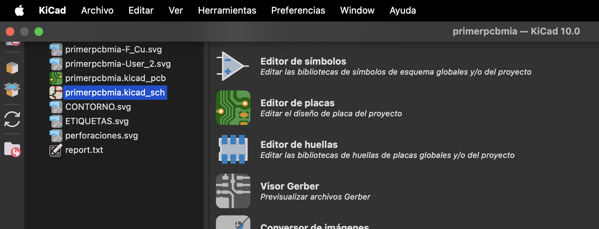
Primera pantalla de KiCad Esto es lo primero que vemos al abrir KiCad. Desde esta pantalla principal podemos acceder a los editores, administrar el proyecto y comenzar a preparar el entorno de trabajo. -
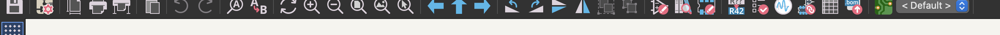
Acceso a las librerías Desde Preferencias entramos a la gestión de bibliotecas. Aquí agregamos o descargamos las librerías que necesitamos para construir nuestro circuito. -
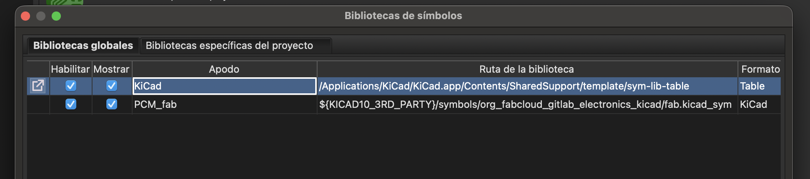
Librerías de símbolos que vamos a utilizar Verificamos que estén habilitadas las bibliotecas necesarias. En nuestro caso trabajamos con las librerías de KiCad y con PCM_fab. -
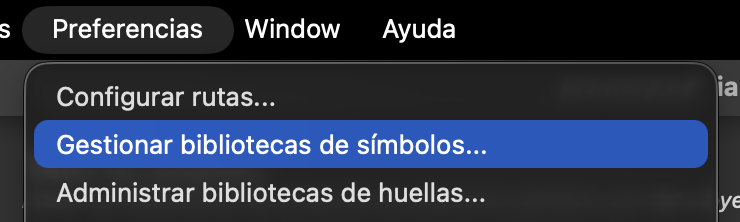
Bibliotecas de huellas Repetimos el mismo proceso para las huellas de los componentes. Estas huellas representan la forma física de los componentes que posteriormente aparecerán en la PCB. -
 Bibliotecas de diseño También revisamos las bibliotecas de bloques de diseño que utilizaremos dentro del proyecto.
Bibliotecas de diseño También revisamos las bibliotecas de bloques de diseño que utilizaremos dentro del proyecto. -
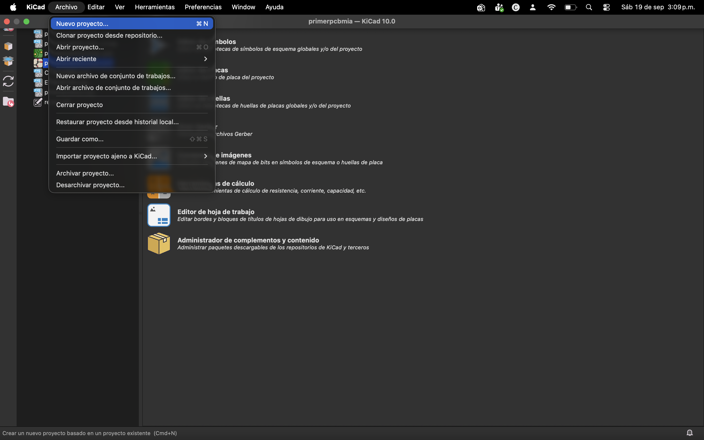
Crear un proyecto nuevo Después vamos a Archivo → Nuevo proyecto para crear el archivo de trabajo en el que se guardarán el esquemático, la PCB y los demás archivos. -
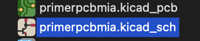
Abrir el esquemático Al crear el proyecto aparecen sus archivos principales. Para empezar a construir el circuito debemos abrir el archivo .kicad_sch.
Trabajo en el esquemático
-
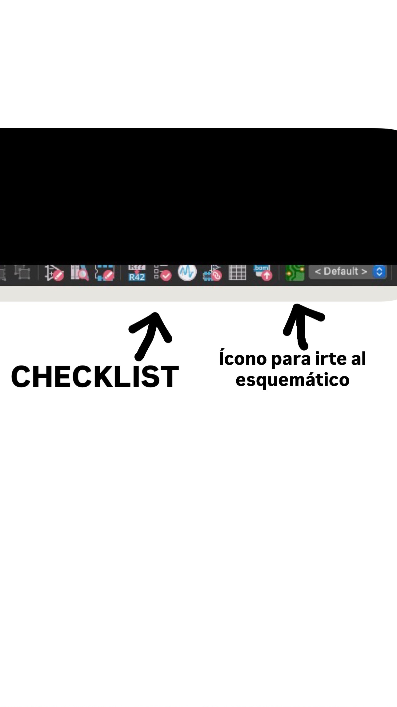
Checklist y navegación del esquemático Esta zona forma parte de nuestras herramientas de trabajo. La checklist nos permite revisar el diseño. Nos muestra los errores que debemos corregir y también los avisos. Los avisos pueden ignorarse si después de revisarlos vemos que no afectan el funcionamiento o la fabricación. En esta misma barra tenemos el acceso para regresar al esquemático. -
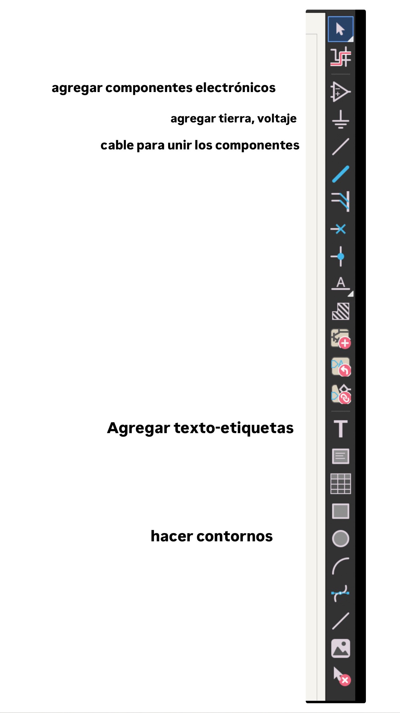
Herramientas del editor de esquemáticos En esta barra encontramos las herramientas necesarias para construir el circuito. Podemos agregar componentes electrónicos, colocar tierra y voltajes, unir componentes con cables, añadir texto y etiquetas y hacer contornos. -
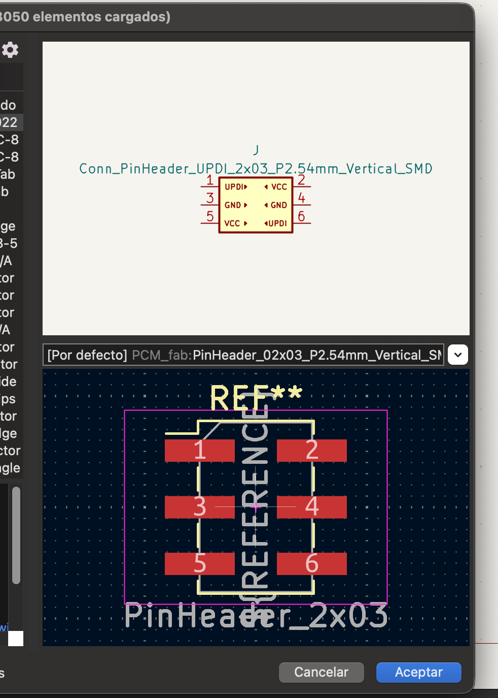
Revisar la huella del componente La imagen inferior corresponde a la huella o footprint del componente. La huella representa la forma física que tendrá el componente sobre la placa.Nota importante: cuando agregamos un componente al esquemático debemos comprobar que tenga una huella asignada. Si el componente no tiene una huella compatible, no podremos utilizarlo correctamente al llevar el diseño a la PCB para su fabricación. -
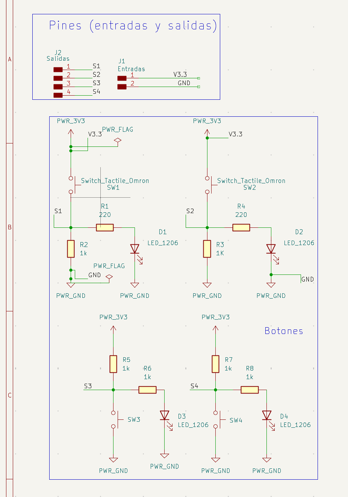
Esquemático final Este es nuestro esquemático terminado. Después de colocar y conectar los componentes, lo ordenamos utilizando contornos y etiquetas. De esta manera separamos visualmente las diferentes partes del circuito y facilitamos su lectura.
Diseño de la PCB
-
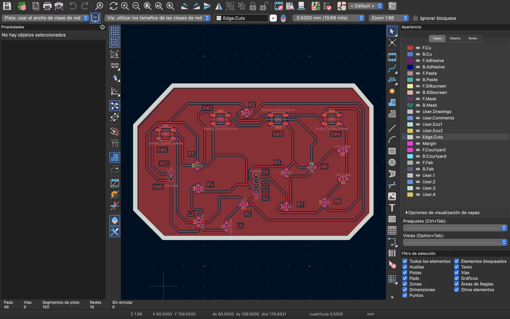
Pasamos al editor de PCB Una vez terminado el esquemático nos vamos al editor de PCB. Aquí observamos el área principal de trabajo. En la parte superior tenemos nuevamente las herramientas de revisión o checklist. En la barra lateral encontramos las opciones para trabajar con etiquetas, pistas/cables y capas. -
 Pasar los componentes del esquemático a la PCB Utilizamos este ícono para cargar en la placa los componentes provenientes del esquemático. Una vez importados, los separamos y acomodamos para comenzar a organizar la PCB.
Pasar los componentes del esquemático a la PCB Utilizamos este ícono para cargar en la placa los componentes provenientes del esquemático. Una vez importados, los separamos y acomodamos para comenzar a organizar la PCB. -
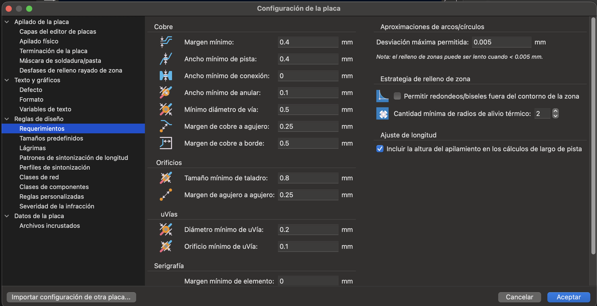
Definir las reglas de diseño Antes de rutear configuramos los requerimientos que debe cumplir la PCB para poder fabricarse. Aquí definimos parámetros como el margen mínimo y el ancho mínimo de pista, además de otras separaciones y dimensiones necesarias para la fabricación. -
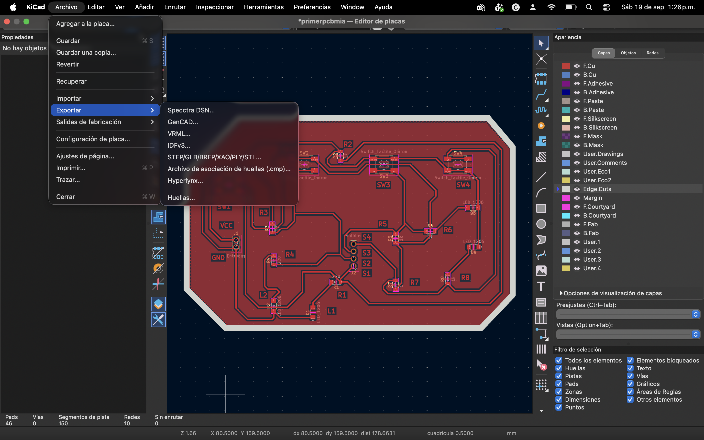
Exportar el diseño en SVG Con el diseño preparado exportamos el archivo en formato SVG. Esta salida nos permite continuar con la preparación de los archivos para fabricación.
Exportación de archivos para fabricación
En esta etapa únicamente preparamos y exportamos los archivos de fabricación. Los archivos generados se guardan en la carpeta de nuestro proyecto en la computadora. Después utilizaremos estos archivos en Mods.
-
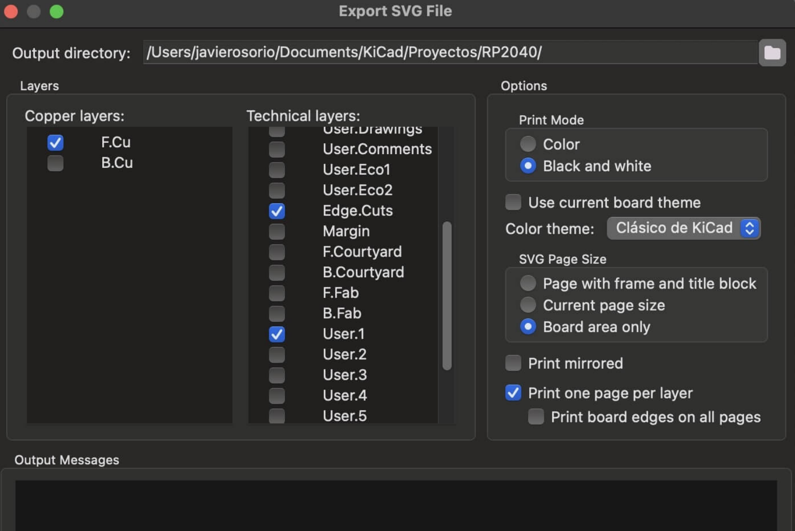
Seleccionar las capas y la carpeta de salida Elegimos las capas que necesitamos y verificamos la carpeta donde se guardarán los archivos generados. Normalmente utilizamos la misma carpeta en donde tenemos guardado nuestro proyecto. -
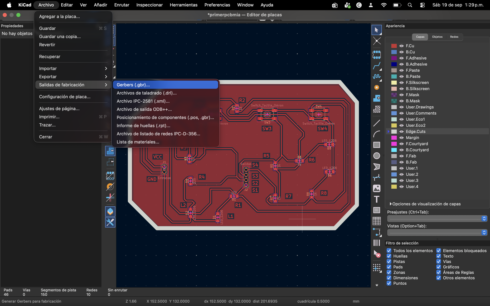
Entrar a Salidas de fabricación → Gerbers Desde el menú entramos a Salidas de fabricación y seleccionamos Gerbers. Desde aquí generamos los archivos correspondientes a las capas de la PCB. -
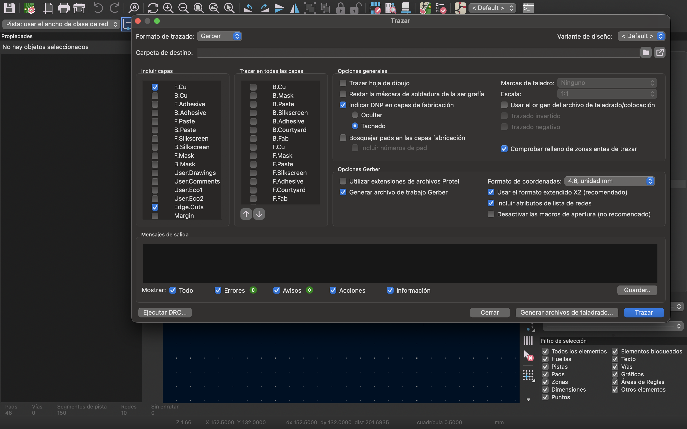
Generar los archivos Gerber Seleccionamos las capas que queremos exportar y trazamos los archivos. KiCad los guarda en la carpeta de destino de nuestro proyecto. -
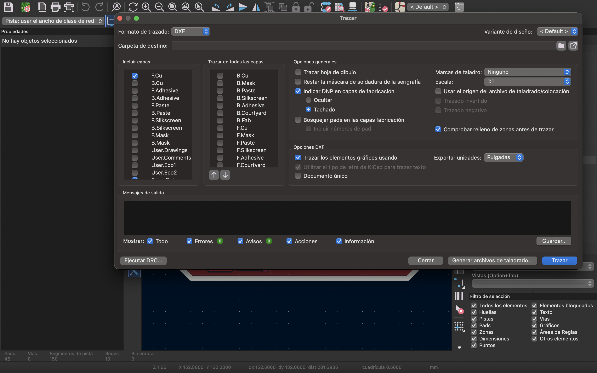
Archivos listos para Mods Al terminar la exportación ya tenemos los archivos guardados en nuestra computadora. Estos son los archivos que utilizaremos en Mods para preparar las rutas y continuar con la fabricación de la PCB.
Uso de Mods CE
Con los archivos ya exportados desde KiCad, pasamos a Mods CE para preparar las rutas de maquinado que utilizará la MonoFab SRM-20.
-
 Abrir el programa en Mods CE Entramos a modsproject.org, abrimos el panel de Programs y buscamos SRM-20 mill → mill 2D PCB. Este es el flujo que utilizaremos para preparar los archivos que posteriormente se enviarán a la MonoFab.
Abrir el programa en Mods CE Entramos a modsproject.org, abrimos el panel de Programs y buscamos SRM-20 mill → mill 2D PCB. Este es el flujo que utilizaremos para preparar los archivos que posteriormente se enviarán a la MonoFab. -
 Cargar el archivo de pistas En el módulo read SVG cargamos Pistas.svg. Posteriormente lo invertimos en Convert SVG. En set PCB defaults seleccionamos la herramienta 0.40 mm flat y configuramos una profundidad de corte de 0.1 mm. Esta profundidad es suficiente para aislar el cobre sin atravesar completamente la placa.
Cargar el archivo de pistas En el módulo read SVG cargamos Pistas.svg. Posteriormente lo invertimos en Convert SVG. En set PCB defaults seleccionamos la herramienta 0.40 mm flat y configuramos una profundidad de corte de 0.1 mm. Esta profundidad es suficiente para aislar el cobre sin atravesar completamente la placa. -
 Configurar el contorno, la velocidad y el guardado Repetimos el proceso con Contornos.svg para realizar el corte exterior de la placa. En este caso utilizamos una fresa de 1.9 mm, capaz de atravesar todo el espesor. En Roland SRM-20 milling machine dejamos la velocidad en 4 mm/s y activamos el guardado automático antes de calcular la ruta.
Configurar el contorno, la velocidad y el guardado Repetimos el proceso con Contornos.svg para realizar el corte exterior de la placa. En este caso utilizamos una fresa de 1.9 mm, capaz de atravesar todo el espesor. En Roland SRM-20 milling machine dejamos la velocidad en 4 mm/s y activamos el guardado automático antes de calcular la ruta.
En desarrollo
Fabricación — De KiCad a la MonoFab con Mods CE
›
Fabricación — De KiCad a la MonoFab con Mods CE
Tutorial: preparar los archivos de corte en Mods CE
KiCad exporta el diseño como imágenes SVG, pero la MonoFab no entiende un SVG directamente: necesita una ruta de herramienta (toolpath) calculada según el diámetro de la fresa y la profundidad de corte. Ese cálculo se hace en Mods CE, una herramienta web basada en módulos conectados que se van armando como un diagrama de flujo. Aquí documentamos, paso por paso y con todas las capturas del proceso, cómo se procesan los tres archivos que exportamos desde KiCad: contorno, huecos y pistas.
Abrir Mods CE y elegir el programa
Entramos a modsproject.org, un lienzo en blanco donde se conectan "módulos" (cada rectángulo de color) para armar un flujo de procesamiento. No hace falta programar nada desde cero: ya existe un programa hecho para exactamente este trabajo, convertir un SVG en una ruta de corte para la Roland SRM-20 (la MonoFab).
- Así se ve Mods CE al entrar por primera vez: un lienzo de cuadrícula totalmente vacío, con el mensaje "tap Programs/Modules to start" abajo a la izquierda.
- Arriba están los controles del lienzo (Light/Dark, Fit, Gitlab) y el menú Programs, que es donde viven todos los flujos ya armados.
- Abrimos el panel Programs (esquina superior izquierda) y escribimos
sren el buscador para filtrar por SRM-20. - Dentro del grupo SRM-20 mill aparecen varias opciones:
mill 2.5D stl,mill 2D,mill 2D PCBymill 3D stl. Elegimos mill 2D PCB — es el flujo ya armado específicamente para fresar placas de circuito, no el genérico "mill 2D" que sirve para corte en general. - Más abajo también existe un grupo "xdesign connect" con accesos directos (Roland SRM20 PCB, Roland SRM20 mill 2.5D stl), pero para este tutorial usamos el programa base de SRM-20 mill.
Cargar el contorno (Contornos.svg)
Con el programa "mill 2D PCB" abierto, el lienzo se llena con la cadena completa de módulos: leer el SVG, convertirlo a imagen, aplicarle un umbral (threshold), calcular la ruta de fresado y enviarla a la máquina. Todavía no hay ningún archivo cargado.
- El bloque rosa read SVG es el punto de partida: tiene un recuadro blanco que dice "drop file here" y un botón select SVG file debajo.
- De ahí salen líneas azules hacia los siguientes módulos (convert SVG image, image threshold...) — todavía en blanco porque no han recibido ningún dato.
- La nota amarilla "=== START HERE === Select a PNG image or a SVG vector image" nos recuerda justamente por dónde hay que empezar.
- Al dar clic en select SVG file se abre el explorador de archivos normal de Windows, apuntando a la carpeta del proyecto de KiCad.
- Ahí están los cuatro SVG que exportamos:
Contornos,etiquetas,huecosypistas— cada uno corresponde a una capa distinta del diseño.
- Para esta primera pasada elegimos específicamente
Contornos— es el archivo que define la silueta final de la placa, el último corte que la separa por completo de la lámina de cobre.
- Ya cargado, el módulo read SVG muestra la silueta de la placa (con forma de campana en este diseño) y sus datos:
file: Contornos.svg, 44.9834 × 44.9834 mm, 25.4 unidades por pulgada. - De ahí la imagen pasa a convert SVG image, que la convierte a un mapa de píxeles (1771 × 1771 px a 1000 dpi) para que los siguientes módulos puedan procesarla.
Calcular y guardar la ruta del contorno
Con la silueta ya cargada, el siguiente paso es decirle a Mods qué fresa vamos a usar y desde qué punto de la placa debe empezar a cortar. Esto se hace en dos bloques: mill raster 2D (calcula la ruta) y Roland SRM-20 milling machine (fija el origen y guarda el archivo final).
- Como atajo, el módulo set PCB defaults trae presets ya cargados con valores típicos de fresas y brocas. Para el corte exterior el preset más cercano es 1.59mm cutout, así que probamos con ese primero.
- Pero la fresa física que realmente íbamos a usar es de 2 mm, no de 1.59 mm. En mill raster 2D corregimos a mano el campo "tool diameter" y lo dejamos en 1.9 mm — más cercano al diámetro real de la herramienta que el preset por defecto, aunque no sea un valor exacto de catálogo.
- El resto de los parámetros se dejan en su valor típico para un corte de contorno: cut depth 0.254 mm, offset number: 1 (una sola pasada alrededor del trazo, ya que solo queremos cortar la línea del borde) y dirección climb.
- Al presionar calculate, Mods dibuja en la parte inferior la vista previa de la ruta que va a seguir la fresa (la silueta de la placa con la trayectoria de corte marcada).
- El bloque Roland SRM-20 milling machine recibe la ruta calculada y define desde dónde empieza a cortar la máquina. Por defecto trae un origen de ejemplo (X:10, Y:10, Z:10 mm) que no nos sirve — necesitamos que las tres pasadas (contorno, huecos y pistas) partan exactamente del mismo punto.
- Cambiamos los tres campos a X:0, Y:0, Z:0 y presionamos move to origin — este es el punto físico donde se fijó la placa en la máquina, y usar siempre el mismo origen es lo que hace que las tres pasadas coincidan sobre el mismo material.
- Abajo del bloque, Mods muestra el tiempo estimado de la pasada, útil para calcular cuánto va a tardar el fresado completo.
- A la derecha aparecen dos formas de mandar la ruta a la máquina: el bloque WebUSB (para enviarla directo desde el navegador si la MonoFab está conectada por USB) y el bloque save file, que genera y descarga el archivo
.rml— el formato que entiende la MonoFab. - Usamos save file: el nombre queda como
SVG image.rmly el estado pasa a "ready" en cuanto el archivo está listo para guardarse. Ese.rmles justo el que después se carga en VPanel para fresar el contorno.
Huecos.svg — las perforaciones
Este archivo marca únicamente los puntos donde van los orificios de montaje (como los de los conectores J1 y J2) — una pasada aparte, con una broca redonda en vez de una fresa plana. Recargamos Mods y volvemos a abrir "mill 2D PCB" desde cero antes de empezar esta pasada, para no arrastrar valores de la pasada anterior.
- En "select SVG file" elegimos ahora
huecos.
- Cargado, se ve como puntos sueltos, no líneas — cada uno marca dónde debe bajar la broca para hacer el agujero. El archivo pesa lo mismo en dimensiones que el contorno (44.98 × 44.98 mm) porque comparte el mismo lienzo de diseño.
- En set PCB defaults elegimos el preset 0.79mm drill — el tamaño estándar para las patas de los conectores THT que lleva esta placa, y esta vez sí coincide con la broca real que usamos, así que no hace falta corregirlo a mano como en el contorno.
- En mill raster 2D el diámetro ya viene cargado en 0.79248 mm (0.0312 in) desde el preset. Dejamos offset number: 1, porque cada punto solo necesita una pasada de la broca para perforar.
- Le damos calculate y Mods genera la ruta: una serie de puntos de bajada, uno por cada orificio detectado en la imagen.
- Bajamos la velocidad a 0.3 mm/s — perforar es más delicado que fresar una pista o un contorno; ir más lento evita que la broca se desvíe o se rompa al entrar en el cobre.
- El origen se deja otra vez en X:0, Y:0, Z:0, exactamente igual que en el contorno, y presionamos move to origin — así los agujeros caen en el lugar correcto sobre la misma placa. Igual que antes, terminamos guardando este segundo
.rmlcon save file.
Pistas.svg — el circuito
El archivo más delicado: aquí se define qué cobre se queda y cuál se elimina para formar las pistas del circuito. Otra vez, empezamos con la página de Mods recién recargada y el programa "mill 2D PCB" abierto desde cero.
- En "select SVG file" elegimos
pistas— el archivo con el trazado completo del circuito.
- Al cargarlo, Mods lo interpreta a su manera por defecto: lo negro es lo que se conserva. Pero nosotros necesitamos justo lo contrario — que la fresa quite el cobre entre pistas, no las pistas mismas.
- Por eso presionamos invert: ahora el negro representa exactamente el cobre que sí queremos cortar/eliminar, y las pistas quedan protegidas (se ve claramente el circuito completo, con todas sus conexiones, resaltado en la imagen).
- Con la imagen ya invertida, seguimos el mismo flujo que con los otros dos archivos: convert SVG image primero y después image threshold, que deja la imagen en blanco y negro puro antes de pasarla al cálculo de la ruta.
- En mill raster 2D el diámetro queda en 0.39624 mm (0.0156 in): la fresa más fina de las tres, porque aquí la precisión entre pistas vecinas es la que más importa. Probamos primero con offset number: 4 — cuatro pasadas de la fresa alrededor de cada pista para vaciar bien el cobre sobrante.
- Con 4 pasadas la ruta tardaba demasiado y no aportaba mejor aislamiento, así que corregimos el offset number a 2: con dos pasadas el aislamiento entre pistas ya sale limpio, sin dejar cobre residual, y el tiempo de fresado baja bastante.
- Igual que con el contorno y los huecos, en Roland SRM-20 milling machine dejamos el origen en 0,0,0 — la tercera y última pasada sobre el mismo punto de referencia.
- Con el tiempo estimado ya calculado (alrededor de 00:09:08 para esta pasada, la más lenta de las tres por la cantidad de pistas), guardamos el archivo
.rmlde pistas desde el panel save file. Con los tres.rmllistos (contorno, huecos y pistas), ya se puede pasar a VPanel para fresar la placa completa en la MonoFab.
Atajos: set PCB defaults, V-bit calculator y exportar el programa
Mods CE trae un par de módulos pensados justo para no tener que calcular todo a mano cada vez, y también permite guardar el programa armado para reutilizarlo después. Aquí quedan documentados con más detalle.
- El campo "tool diameter" de mill raster 2D acepta cualquier valor, no solo los presets: aquí se probó con una fresa de 1.5875 mm (1/16 de pulgada) para comparar cómo cambia la vista previa de la ruta del contorno frente a la de 1.9 mm que terminamos usando.
- Es una buena forma de anticipar, antes de fresar, si una fresa distinta a la que tenemos a la mano dejaría un corte aceptable.
- El módulo set PCB defaults agrupa los presets más comunes en tres categorías: Traces (0.40 mm flat, 0.25 mm flat, 60° #501 V-bit, 40° #502 V-bit), Drill (0.79 mm drill) y Cutout (0.79 mm cutout, 1.59 mm cutout). Con un clic manda el diámetro y la profundidad típicos de esa herramienta directo a mill raster 2D.
- Al lado, el módulo V-bit calculator sirve para cuando se usa una fresa en forma de V en vez de una plana: a partir del diámetro de la punta y el ángulo de la V calcula automáticamente el ancho y la profundidad de corte reales, y los manda con el botón send calculated settings. El diagrama de la derecha (ángulo, diámetro de punta, stepover, ancho y profundidad de corte) resume visualmente esa relación.
- Aquí se ve el mismo panel con el preset de la broca de 0.79 mm seleccionado — el mismo que usamos para los huecos — junto con los parámetros que trae cargados el V-bit calculator por defecto: punta de 0.0039 in, ángulo de 30°, 4 offsets, stepover 0.5 y velocidad de 4 mm/s.
- Por último, el panel lateral Programs también sirve para administrar el propio flujo de trabajo: Add from file para importar un programa guardado, Save program para descargar el que armamos, Update all modules para refrescar la versión de cada módulo y Export as HTML para exportar todo el lienzo como una página independiente.
- Guardar el programa una vez armado (con los presets y valores ya ajustados a nuestra fresadora) evita tener que repetir toda esta configuración cada vez que se hace una placa nueva.
Pendiente
Próxima práctica
›
Próxima práctica
Este espacio se irá llenando con cada práctica del curso hasta llegar al proyecto final.